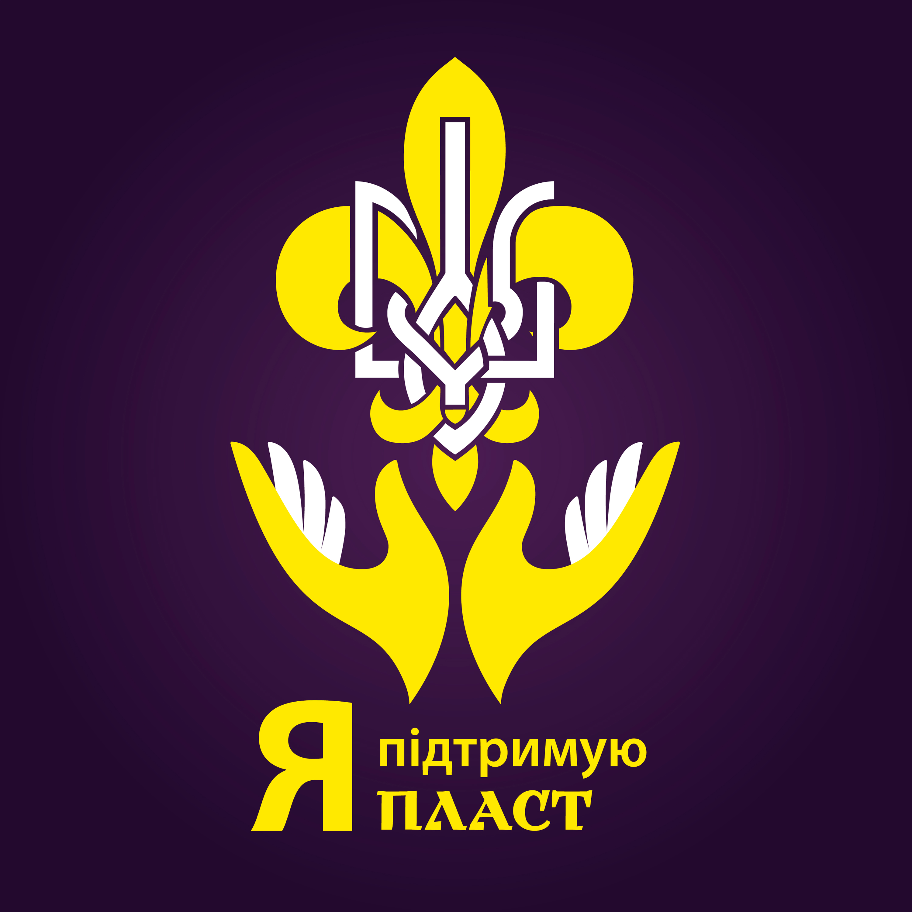

Прагнемо, щоб більше молодих українців долучилися до Пласту й
отримали знання та вміння, що дозволять їм надихати та об’єднувати
однодумців в єдину хвилю змін для сталого розвитку України.

Зробити пожертву
Корисна будь-яка сума
Оплата рахунком
Не можете внести допомогу через запропоновані нами сервіси?
Залучення та навчання виховників, що працюють з дітьми
У 2020 році відбудеться 20 навчальних тренінгів для 100 виховників, що працюють з дітьми за пластовою
системою виховання. Виховники є основою діяльності організації, оскільки в Пласті дитину завжди супроводжує
дорослий, що навчає, радить, надихає та є прикладом відповідального, активного громадянина, яким має
стати кожен.
Створення нових осередків та забезпечення їх функціонування
Розвиток Пласту в регіонах спрямованиий на те, щоб діти та молодь по всій Україні мали можливість
розвиватися в Пласті. За 2020 рік плануємо створити ще 15 осередків Пласту на Півночі, Півдні та Сході. Прагнемо, щоб в
Україні зростала кількість самостійних, свідомих та ініціативних молодих людей, що братимуть відповідальність за своє
майбутнє.
Забезпечення організаційного функціонування Пласту
Організаційний розвиток Пласту сьогодні становить одну із ключових цілей стратегії організації. Пласт
гостро потребує налагодження системного та ефективного управління. Зокрема у 2020 році ми плануємо
запровадити програму підвищення кваліфікації керівників регіональних осередків Пласту.
розробити мобільний додаток, який дозволить ефективніше адаптувати та інтегрувати нових волонтерів.
розробити СRM- систему що дозволить автоматизувати процеси роботи з волонетрами, які зараз здійснюються
“вручну”.
Організація та проведення 25 таборів
В Пласті відвідуваність всеукраїнських заходів дітьми з сільської місцевості ледь досягає 50%, в той час як з
великих міст - не менше 70%. Доступність Пласту для кожної дитини - прагнемо, щоб 100% дітей в Пласті мали фінансову
спроможність відвідати пластові заходи!
Лічильник пожертв
153
тис. грн пожертв
207
доброчинців
184
дні до завершення
Список проектів
25 таборів для дітей різного віку влітку 2020 року
0%
необхідно 2,5 млн грн
100 виховників, що працюють з дітьми, залучено та навчено
1%
зібрано 18 тис.грн з 1,8 млн грн
15 осередків Пласту створено: Північ, Південь, Схід
4,5%
зібрано 112 тис. грн з 2,5 млн грн
Онлайн-посібник Пластуна для дітей 11-18 років розроблено
0%
необхідно 430 тис. грн
Базу даних та аналітики Е-Plast для роботи з волонтерами оновлено
0%
необхідно 2 млн грн
Мобільний додаток для інтеграції волонтерів PlasAp доопрацьовано та запущено
3,6%
зібрано 23 тис.грн з 630 тис. грн
Управлінці 30 осередків покращили навики адміністрування через “Школу організаційного розвитку”
0%
необхідно 640 тис. грн
Про Пласт
Пласт — це найбільша молодіжна організація України. Ми діємо вже 107 років. Наша ціль: виховувати проактивних громадян України. Таких, що готові змінюватись та змінювати власне оточення — робити світ довкола кращим.
Пластуни вміють мріяти і втілювати власні мрії в суспільно-корисні проекти. Щоб наша організація могла працювати у повну силу, нам бракує ресурсів. Будь-яка ваша пожертва буде корисною для організації.
Контакти організації
Електронна пошта - fundraising@plast.org.ua,Телефон - +38 095 797 88 58,Адреса - м. Київ, вул. Гончара, 47 В,01034
Контакти Голови організації
Станіслав АндрійчукЕлектронна пошта - info@plast.org.ua